Newer retest: Production 8ff52cd results and screenshots. The historical findings below are preserved.
2026-10-29 · production commit 0303b51 · Edge completion run
Target: https://buhurt-os.vercel.app
Event: TEST Outrance V26.4 Rehearsal 2026-10-28
Viewport targets: 390×844 and 1440×900.
This report combines the preserved earlier Pack29c evidence with the Edge completion run. Earlier captures were taken before the switch to Edge. No application code, auth settings, roles, rules or migrations were changed. All scoring and fixture changes stayed in the synthetic event. No records were deleted.
| Status | Check | Evidence / result |
|---|---|---|
| PASS | Production and synthetic guard | Production footer 0303b51. Earlier captures show the Test badge at 390×844 and 1440×900. Only the named rehearsal event was used. |
| PASS | Paper and round confirmation without reload | Round 1 passed in the earlier portion. In Edge, round 2 Anna 3–10 appeared on both open desks without reload. Organizer confirmation without the deliberately absent phone updated both desks to 18.67–19.33. |
| LIMITED | Background / foreground | The second desk received paper and round updates without reload. Returning to its native Edge tab showed the final result. Browser automation reports document.visibilityState=visible even for the other tab; native window observation was inconsistent. Genuine hidden-tab throttling/recovery is NOT certified by this run. |
| PASS | Excluded phone sheet | Earlier evidence: the round-1 sheet closed with “Round 1 was confirmed without your sheet. Wait for the next round.” Round 2 was prepared without a premature sheet dialog. |
| PASS | Exact scores: Draws and schedule | Original C–A result shows 18.67–19.33 at both widths. |
| PASS | Exact scores: counter Last fight | After completing the new C–A fixture with the same uneven-sheet totals, the counter shows “TEST Outrance Man C vs TEST Outrance Man A · 18.67-19.33 to TEST Outrance Man A” at both sizes. This is the new fixture, not a re-finalization of the original fight. |
| NOT VERIFIED | Exact scores: field queue | The inspected Lyst 1 queue lists only the remaining active C–D fight; no completed C–A result or score is rendered. Live ops likewise displays current/upcoming fights. The requested 18.67–19.33 queue display could not be verified; no 19–19 display was observed. |
| PASS | F02 / F03 phone layout | At 390×844, uneven confirmed rounds have scrollWidth 375; finish dialog has scrollWidth 390. No horizontal overflow. Names, per-marshal totals and the split-decision button wrap within the screen. |
| FAIL | F04 official-result transition | After the final win button was clicked, the submitting desk stayed on “Scoring”, “not official until you finish the fight”, with “Finish the fight” still available. It said all score actions were confirmed. The server had already finalized the match, while the observer desk correctly showed “This fight is final”. |
| LIMITED | F04 layout | The stale submitting screen measures 375px at phone width and 1440px at desktop, without overflow; it is NOT the expected official-result screen. The observer final screen passes at 1440×900. Its phone viewport could not be applied reliably, so no phone official-result layout pass is claimed. |
| PASS | Desktop duel regression layout | Fresh synthetic Men Longsword fixture on Lyst 2 at 1440×900: scrollWidth 1440; score cards, clock, start button and navigation fit with no overlap. The fixture is left active, round 1 not started. |
| PASS | Auth destination | Google sign-in remained on buhurt-os.vercel.app. No redirect to buhurt-os-r5-03dd.vercel.app was observed. |
356ba697-5486-4b44-a283-29b6c405c200 on two desks.Read-only database verification: result=b; queue_state=final; finalized_at=2026-10-29 16:49:01.805444+00; detail.win_type=split_decision; detail.totals.score_a=18.667; score_b=19.333. Legacy top-level integer fields are 19/19; the verified UI result surfaces use the precise detail totals. There was no console error explaining the stale result.
0081228a-e8d6-44b6-98a9-65cf5fe8dc7a.5bba6a10-2abb-4371-8f5a-524d7cf2aab0 remains unchanged.356ba697-5486-4b44-a283-29b6c405c200 is now final, Man A wins by split decision, 18.667–19.333. Round 1 has 3 sheets; round 2 has 1. Both retain missing-phone reasons.11465ab5-d6b5-4b34-a9bc-f2d45db63eeb, label “TEST Pack29c desktop layout”, was assigned to Field 2 to avoid disturbing the existing KO-held C–D on Field 1. It is active with round 1 not started. This is a fixture assignment, not a change to event/rule settings.No warn/error entries were captured in the saved test steps. DOM snapshots and measurements accompany the images. Screenshots are viewport captures and some retain their current scroll position. Counter access codes are not included. Attempts to resize the observer final screen continued to report 1440×900, so those attempts are excluded from phone evidence. The console evidence is bounded to captured tabs/times, not a claim that the whole deployment has no errors.
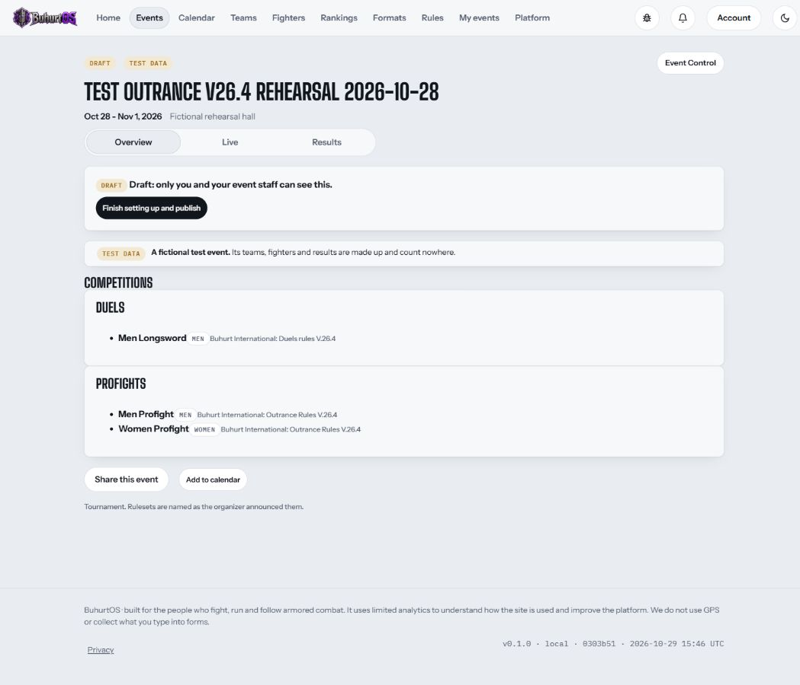
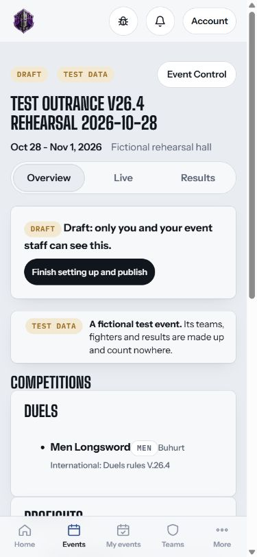
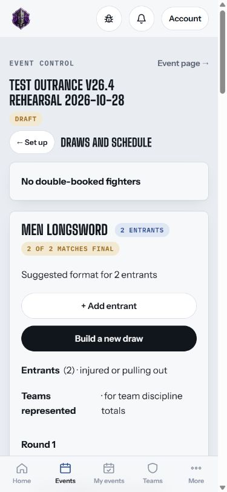
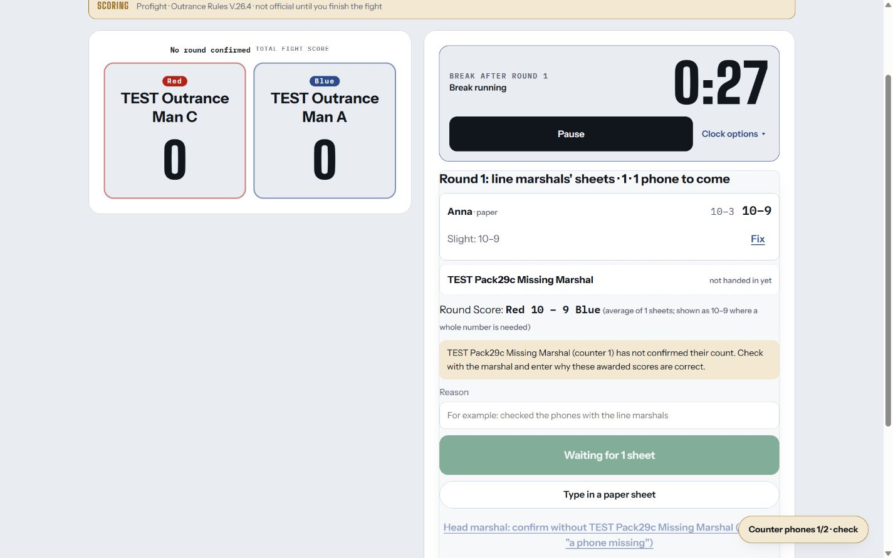
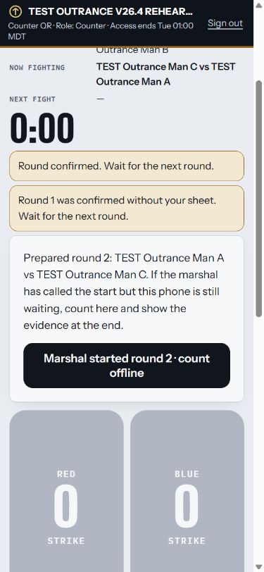
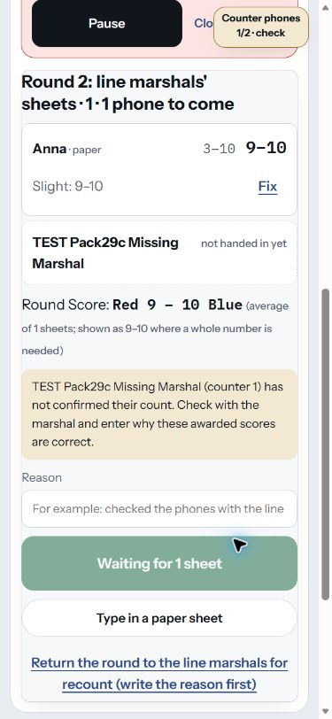
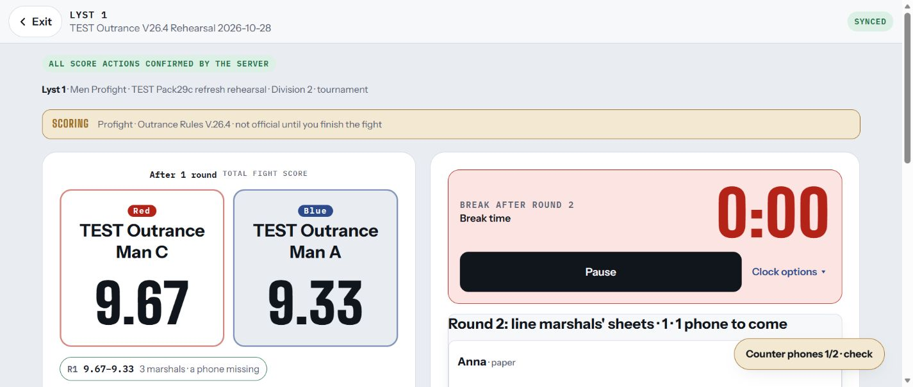
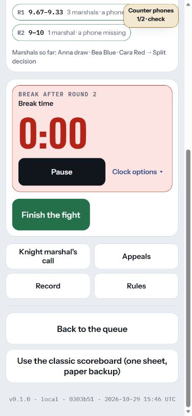
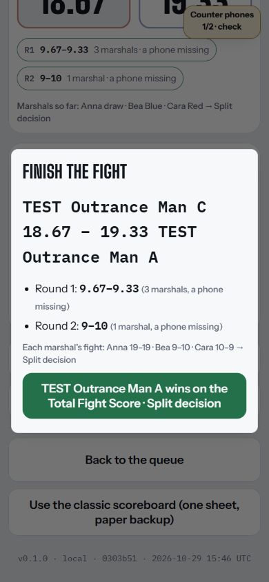
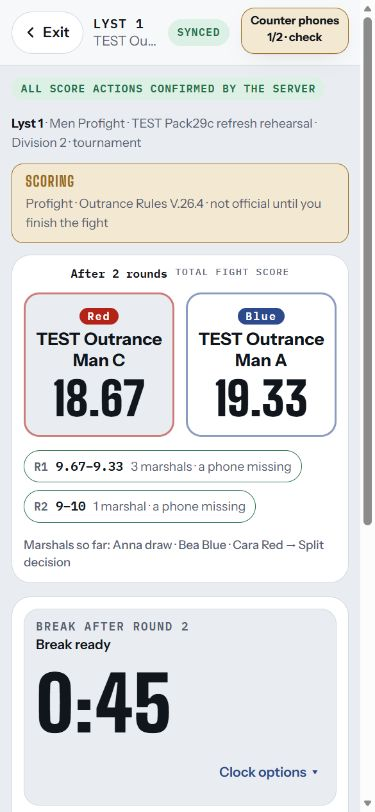
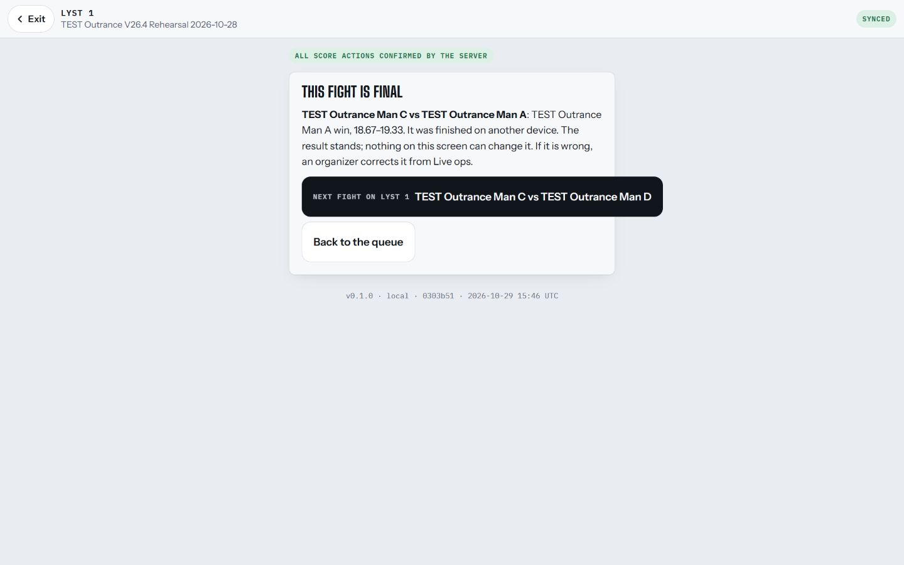
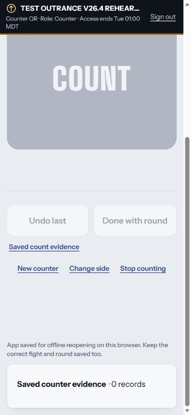
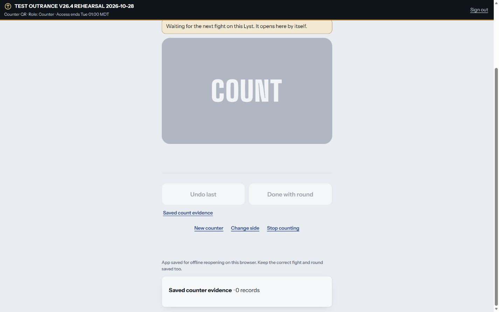
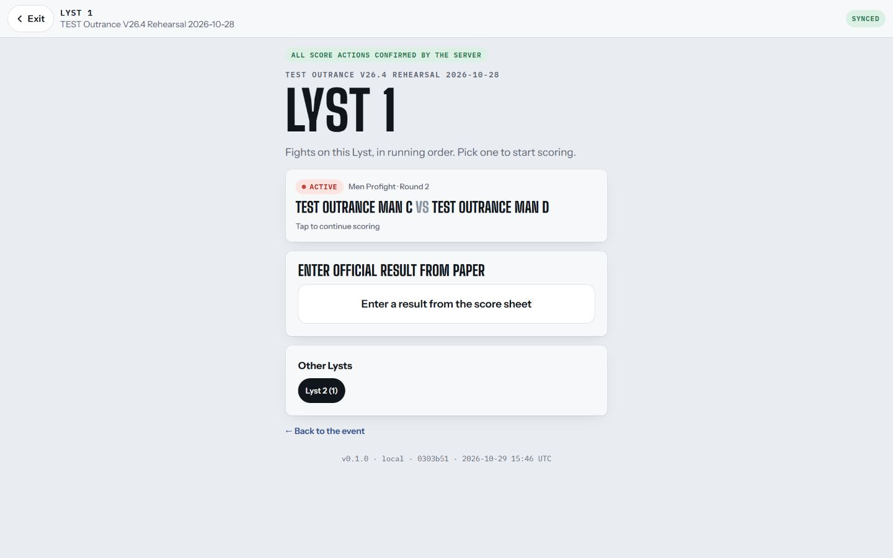
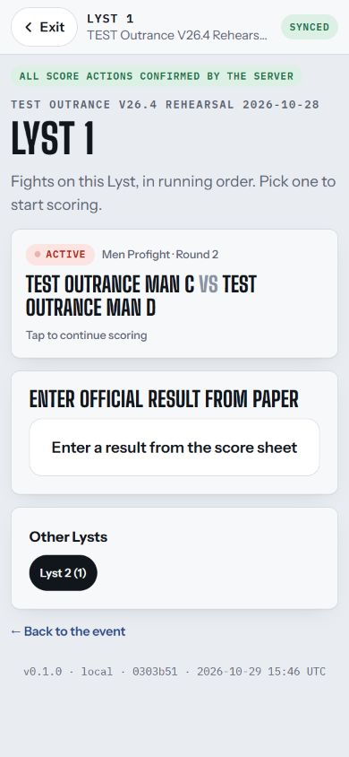
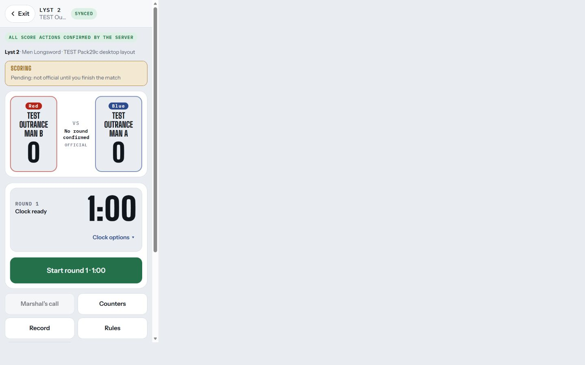
Local evidence folder: C:/Users/User/Documents/Codex/2026-10-19/work-along-side-claude-and-do/pack29c-production-0303b51/